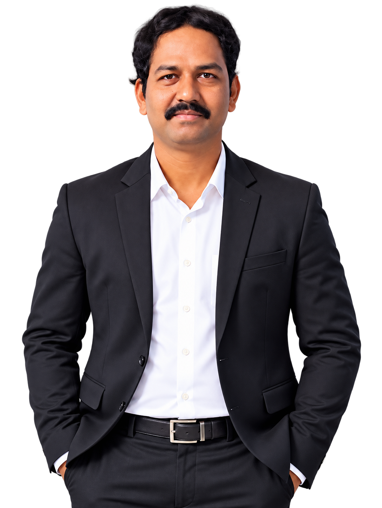

SANTOSH S
KATTIMANI
A passionate and creative professional with 15 years of experience in digital solutions, web design, data analysis and AI-powered tools. I love turning ideas into useful digital experiences, engaging presentations and data-driven solutions.

👤 About Me
I'm Santosh S Kattimani, an AI Prompt Engineer, Web Designer and Data Analyst with 15 years of professional experience. I enjoy creating practical digital solutions, attractive visual content, websites, presentations and organized data.
⚡ My Skills
🎓 Education
CSS High School, Chikodi
Board: Karnataka Secondary Education Examination Board
Passing Year: 2007
Marks: 391
Percentage: 62.56%
R.D. Composite PU College, Chikodi
Board: Department of Pre-University Education
Passing Year: 2009
Marks: 512
Percentage: 85.16%
Arts (Degree) — R.D. Degree College, Chikodi
University: Rani Chennamma University, Belagavi
Passing Year: 2012
Marks: 504
Percentage: 84.00%
🌐 Language Known
English: Good
Hindi: Fluent
Kannada: Fluent
Marathi: Fluent
Telugu: Fluent
Tamil: Good
Urdu: Good
👤 Personal Details
Father's Name: Shivamurti
Mother's Name: Sumitra
Date of Birth: 25-11-1991
Marital Status: Married
Gender: Male
Nationality: Indian
Religion: Hindu
💻 My Projects
YouTube Thumbnail Designs
Attractive and professional thumbnail designs for different content niches.
Business Website
Modern responsive website concepts designed for clients and businesses.
Professional Presentations
Dynamic and engaging presentations for business and education.
Excel Data Formatting
Organized, cleaned and formatted data for better insights and reporting.
⚙️ My Work Process
Discover
Understand needs and requirements.
Plan
Structure the solution and roadmap.
Design
Create clean, attractive experiences.
Develop
Build practical digital solutions.
Test
Check quality and performance.
Deliver
Launch and provide support.
💼 Experience
15 Years
Total Professional Work Experience
AI Prompt Engineer • Web Designer • Data Analyst